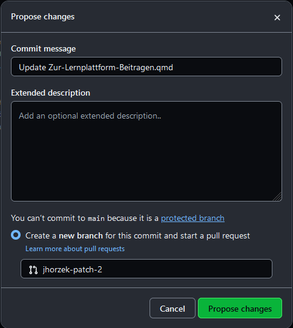
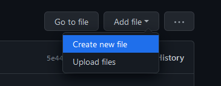

modell <- lm(noten ~ stunden)
summary(modell) # Anzeigen der Modellparameter16 Zur R-Lernplattform Beitragen
Dieses Repository enthält alle Dateien, die für die Erstellung der R-Lernplattform notwendig sind. Die Webseite ist als Quarto Book Projekt angelegt und kann beliebig erweitert und überarbeitet werden.
16.1 Was finde ich im Projekt?
Die wichtigsten Dokumente sind die Quarto Markdown Dateien. Diese enden mit .qmd und in ihnen sind die tatsächlichen Inhalte der Website gespeichert. Beispielsweise findest Du in “Installation.qmd” die Infos zur Installation von R und RStudio. Im Dokument “Einfuehrung_in_R.qmd” befindet sich
dann die Einführung in R.
Wichtig: Die .qmd - Dateien landen nicht automatisch auf der Webseite! Damit das Thema, das in der .qmd Datei behandelt wird, auch auf der Webseite landet, müssen wir erst die _quarto.yml Datei öffnen. Dort finden wir beispielsweise folgende Auflistung:
book:
title: "R Lernplattform"
author: "Methods Group Berlin"
chapters:
- part: "R und RStudio"
chapters:
- index.qmd
- Installation.qmd
- Einfuehrung_in_R.qmd
- Einfuehrung_in_RStudio.qmd
- Pakete.qmd
- Daten-importieren.qmd
- Fehlermeldungen.qmd
- Datenvorbereitung.qmd
- Fehlende-Werte.qmd
- Wide-and-Long-Format.qmd
- Grafiken.qmd
- Markdown.qmd
- part: "Spezifische Themen"
chapters:
- Voraussetzungspruefung.qmd
- Outputs-ALM-FAQ.qmd
- Git.qmd
- part: "Projekt-Dokumentation"
chapters:
- Interne-Dokumentation.qmd
- lineare-regression.qmdJede qmd - Datei, die nachher tatsächlich auf der Webseite erscheinen soll, muss hier aufgeführt werden. Achtung: Die Einrückungen sind hier sehr wichtig, sonst funktioniert das Dokument nicht. Mehr Infos gibt es hier.
Im Ordner “figures” befinden sich alle Bilder, die in der Webseite eingebunden sind. Beispielsweise befinden sich im Unterornder Daten-importieren/Bilder alle Bilder des Themas Daten importieren.
Im Ordner “data” befinden sich alle Datensätze, die zur Erstellung der Webseite notwendig sind. Diese werden in den Beispiel-Analysen verwendet (z.B. um das Einlesen von Datensätzen zu veanschaulichen).
Die restlichen Dateien sind notwendig für Quarto. Den größten Teil hiervon können wir ignorieren. Für uns (manchmal) relevant sind hier eigentlich nur “style.scss” und “DESCRIPTION”. In “style.scss” wird das Aussehen der Webseite definiert. Diese Datei ist aktuell einfach von der alten Webseite übernommen, was dazu führt, dass der bisherige Stil beibehalten wird. In “DESCRIPTION” geben wir (unter anderem) an, welche R Pakete wir in den einzelnen .qmd Dateien nutzen. Wenn wir beispielsweise lavaan nutzen wollen, müssen wir hier lavaan zu den Paketen hinzufügen (siehe unten). Wenn wir das vergessen, kommt es zu Fehlern beim erstellen der Webseite!
16.2 Themen bearbeiten
Themen können entweder direkt auf GitHub bearbeitet werden oder lokal auf dem eigenen Rechner. Wenn Du Themen auf Deinem Rechner bearbeiten möchtest, musst Du Dich mit git und GitHub auskennen. Im Folgenden werden wir uns auf die Bearbeitung direkt in GitHub konzentrieren.
Angenommen Dir fällt ein Fehler in der Einführung in R auf. Um den Fehler zu beheben, öffne das Dokument “Einfuehrung_in_R.qmd” in GitHub.

Anschließend kannst Du die Datei bearbeiten, indem Du auf den Stift klickst:

Du kannst nun das Dokument verändern. Wenn Du alle Veränderungen vorgenommen hast, dann klicke auf commit (scrolle nach ganz unten).

Die Veränderungen sind nun gespeichert! Wichtig: Die Webseite wird nicht automatisch aktualisiert. Hier ist zur Zeit noch etwas Handarbeit erfordert. Das ist eine bewusste Entscheidung, um sicher zu stellen, dass keine unfertigen Seiten aus Versehen online gehen.
16.2.1 Code hinzufügen
Wenn man Code hinzufügen möchte, funktioniert das identisch wie in RMarkdown also, z.B. so:
Wir können mit zusätzlichen Code chunk options festlegen, ob der Code z.B. ausgeführt (eval=TRUE oder eval=FALSE) oder überhaupt angezeigt (echo=TRUE oder echo=FALSE) werden soll. Im obigen Fall haben wir keine Variablen noten und stunden. Daher kann der Code nicht ausgeführt werden; sonst kommt es zu einem Fehler. Deshalb setzen wir eval=FALSE. Mehr infos gibt es hier.
16.2.2 Daten hinzufügen
Wenn Du einen Datensatz für Deine RMarkdown-Datei brauchst, der nicht in R oder einem Paket enthalten ist, dann speichere diesen im Ordner “data”. Anschließend kannst Du ihn folgendermaßen in Deiner RMarkdown Datei einlesen:
mein_datensatz <- read.csv("data/mein_datensatz.csv")16.2.3 Bilder hinzufügen
Wenn Du Bilder für Deine RMarkdown-Datei brauchst, dann speichere diese im Ordner “figures”. Anschließend kannst Du diese beispielsweise folgendermaßen nutzen:
Eventuell musst du auch hierfür auch einen neuen Ordner erstellen (hier: den Ordner mein_thema). Wenn Du diesen online in GitHub erstellen willst, dann musst Du aktuell folgendermaßen vorgehen:
- Gehe auf “create new file” oben rechts:

- Schreibe den Pfad “mein_thema” in den Dateinamen:

- Füge eine backslash “/” hinzu. Dann wird GitHub einen Ordner erstellen:
- Weil GitHub uns nicht erlaubt, einfach nur den Ordner zu commiten, müssen wir zudem eine neue Datei erstellen. Am besten schreibt man dafür einfach irgendwas in den File, den Github schon aufmacht. Ich nenne diese beispielsweise einfach temp.txt:
Anschließend können wir auf Commit klicken und haben nun einen neuen Ordner. Unsere Bilder können wir über “Upload files” einfach von unserem PC hochladen. Oder per Drag & Drop einfügen.
16.2.4 Links hinzufügen
Wenn Du intern auf ein anderes Thema referenzieren möchtest, kannst Du einen Link einfügen. Dies geht mit:
[text, den die Leser:innen sehen](Name_der_qmd_Datei.qmd)Beispielsweise führt folgender Link zur Einführung in R. Als Rohtext steht hier:
Beispielsweise führt folgender Link zur [Einführung in R](Einfuehrung_in_R.qmd).Für Links zu Subkapitel, können wir einen Hashtag nutzen: [about](about.qmd#section)
16.2.5 Paket hinzufügen
Wenn Dein neues Thema auch ein neues R-Paket benötigt, dann musst Du dieses im Dokument DESCRIPTION zu Imports: hinzufügen (so wie beispielsweise dplyr).
Wichtig: Wenn wir ein R Paket verwenden und dieses nicht zur DESCRIPTION hinzufügen, dann kann die Webseite nicht erstellt werden! Die Webseite wird von GitHub erstellt und dafür muss GitHub wissen, welche Pakete installiert werden müssen.
Wenn wir die Webseite auf unserem eigenen Rechner erstellen wollen, können wir wie im Kapitel ?sec-introduction beschrieben vorgehen.
16.3 Neues Thema erstellen
Es gibt mehrere Wege, ein neues Thema zu erstellen. Wir können, wie oben beschrieben, eine neue Datei direkt in GitHub erstellen.
Dieser können wir nun beispielsweise den Namen “Mein-neues-Thema.qmd” geben und sie direkt in GitHub bearbeiten. Wenn wir dies tun, können wir aber den R Code nicht ausführen; das geschieht erst, wenn die Webseite erstellt wird.
Ein einfacherer Web ist folgender:
- Wir erstellen auf unserem Computer in RStudio eine neue Quarto Datei und nennen diese “Mein-neues-Thema.qmd”.
- Wir entfernen den gesamten Inhalt der Datei und fangen direkt mit einer Überschrift an (wichtig: es muss eine Überschrift mit nur einem Hashtag sein; siehe beispielsweise Zeile 1 in https://github.com/Methods-Berlin/RLernplattform/blob/main/Pakete.qmd).
- Jetzt können wir wie gewohnt unsere Inhalte in die Quarto Datei schreiben und den Code auch lokal laufen lassen.
Wenn wir fertig mit dem Erstellen der neuen Datei sind, können wir sie direkt auf GitHub hochladen:
Unser neues Thema wurde nun hinzugefügt!
16.4 Webseite erstellen
16.4.1 Online-Version erstellen
Die Online-Version können wir updaten, indem wir hier auf run workflow drücken:

Die Webseite wird nun automatisch erstellt.
16.4.2 Offline-Version erstellen
Wir können aber eine offline-Version erstellen, die wir dann herunterlagen und auf unserem Computer anschauen können. Hierfür werden GitHub Actions genutzt.
Hinweis: Wir haben nur eine begrenzte Rechenkapazität auf GitHub. Bitte erstelle die Webseite nur dann neu, wenn Du alle Änderungen vorgenommen hast, die Du vornehmen wolltest.
Das Vorgehen ist aktuell:
- Klicke auf Actions

- Klicke auf create_book

- Klicke auf Run workflow

- Wähle Run workflow

Das Bookdown Projekt wird nun in eine Webseite übersetzt. Diese ist allerdings nicht online!
Um die Webseite herunter zu laden, ist das Vorgehen:
- Klicke auf Actions
- Klicke auf den neuesten Durchgang der create_book Action

- Scrolle ganz nach unten. Dort findest Du den Ordner docs unter Artefacts

Lade die Datei herunter und entpacke sie auf Deinem Computer.

Im Ordner wirst Du unter anderem mehrere .html Dateien finden. Öffne eine beliebige dieser Dateien mit Deinem Browser, um die lokale Version der Webseite anzuzeigen.

16.4.3 Fehler beheben
Es kommt immer wieder vor, dass beim erstellen der Webseite Fehler auftreten. Diese sehen in RStudio beispielsweise so aus:
Wir sehen hier auf der rechten Seite den Hinweis:

Dieser Fehler sagt uns, dass wir im Dokument _main.Rmd in Zeile 11731-11733 nach einem Fehler ausschau halten müssen. Noch spezifischer sagt uns der Fehler, dass es das Objekt “noten” nicht gibt. Wenn wir das Dokument _main.Rmd öffnen, finden wir dort in den angegebenen Zeilen:  Dieser Teil des Dokuments
Dieser Teil des Dokuments _main.Rmd kommt aus dem Dokument 15-Interne-Dokumentation.Rmd. Schauen wir dort noch mal genauer nach, dann sehen wir, dass die Variablen noten und stunden gar nicht erstellt wurden und deshalb der Code nicht funktionieren kann. Wir können das Problem lösen, indem wir eval=FALSE hinzufügen.
16.4.4 Alle Dependencies installieren
Solltest Du nicht alle Pakete installiert haben, die auf der Webseite genutzt werden, kannst Du entweder die Datei DESCRIPTION öffnen und alle dort aufgeführten Pakete installieren oder Du öffnest die Datei RLernplattform.Rproj in RStudio und führst folgenden Code aus:
if(!require("devtools"))
install.packages("devtools")
library("devtools")
devtools::install_deps()